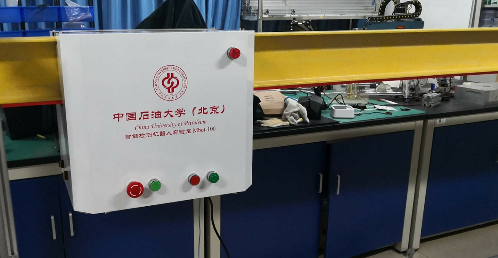

轨道式智能盘煤机器人是由中国石油大学(北京)智能检测机器人实验室独立研制的一款自动化快速盘煤检测产品。
现火电企业及矿山企业煤场盘煤作业均采用传统的人工盘煤方式，盘煤精度不高，人员劳动作业强度大。本实验室根据多年机械结构设计经验，结合近年来的三维点云逆向工程检测算法的科研突破，对于存在全封闭干煤棚的煤场，研发出一套轨道式智能盘煤检测机器人系统。该套系统通过在干煤棚顶部马道下部安装柔性导轨，利用轨道小车带动三维激光雷达对煤堆进行全局扫描的方式，可以高效快速得到煤堆的体积，测算精度高。
轨道式智能盘煤机器人的动力由安装在机器人上的驱动轮提供，通过电机控制系统实现闭环控制，将所携带的32线激光雷达测量装置在轨道快速移动，激光扫描系统运行过程中对煤场进行切面式扫描，同时借助轨道上安装的行程测量系统，实时定位当前扫描仪位置，实现整个煤场的三维扫描。扫描过程中，测量数据传输到数据处理服务器上，进行实时数据合成计算，生成煤场的立体图形并计算出煤场的体积报表。该套设备系统能实现自动、智能、随时盘煤，也可切换至手动控制盘煤。盘煤精度达到国家标准并处于行业领先地位。
轨道式智能盘煤机器人系统主要包括：盘煤巡检机器人（包含激光扫描仪、定位装置、无线通信装置、驱动系统）、轨道及充供电系统、现场控制系统、盘煤处理系统等设备组成。
1、可以随时进行煤场的盘点；
2、实现自动盘煤，在上位机控制界面上实现“一键盘煤”
3、扫描过程无盲区，导轨覆盖了整个煤场，不存在机械盲区；
4、可加载温度、湿度等多种传感器，实现料场的全面监管；
5、数据传输与计算均自动完成，可定制报表输出；
6、实现任意指定区域范围内的测量作业。
1、轨道承重：>1kN；
2、自重：25kg；
3、速度：>2 m/s；
4、续航时间：连续运行;
5、无线传输：>200 m；
6、测量精度：<5‰，精准盘煤；
7、噪声：直接测量<65 dB (1米距离测量)；
8、一键启停，远程控制，实时测量。
随着深海油气的开发，采用连续油管技术进行立管、油气井的清管、检测、维抢修等修井作业，逐渐成为一种热点技术。该技术的应用可以有效节约修井作业时间，极大的降低作业成本。然而在进行深海修井工程时，因为连续油管刚度小，在下入或作业时难以承受轴向载荷易发生屈曲现象。特别是随着水深的增加，连续油管下入深海立管的屈曲问题就越发凸显，易引发作业事故，成为制约该项技术推广的主要技术瓶颈。这种典型海洋管柱问题的研究在国际上属于前沿领域。
为解决以上问题，保障海洋油气开发的修井作业，申请人在国家自然科学基金委的资助下，开展了以下研究：(1)以深海浮动边界下的连续油管为研究对象，采用非线性静力学分析法探究临界载荷、应力和应变的演变机制，揭示细长柔性杆在悬链线边界下的载荷传递规律；(2)引入波浪、海流等干扰的分级等效载荷，采用有限元法提出接触作用算法，探究细长管中管在浮动边界下的接触作用机理；(3)开展实验研究，运用最优化理论优化悬链线浮动边界下的细长柔性杆屈曲接触力学模型；（4）连续油管在深海立管中力学模型的应用软件开发。
通过以上研究，取得的项目成果如下：学术论文共发表15篇，其中Ocean engineering, Journal of Engineering for the Maritime Environment等国际期刊收录SCI论文7篇；参加国际学术论文3次，EI收录会议论文3篇；申请国家专利6项，其中授权国家发明专利2项，授权国家实用新型专利2项；2017年出版的学术著作1部：《ABAQUS有限元分析与案例精通 在海洋石油工程中的应用》，部分研究成果刊载本书中。